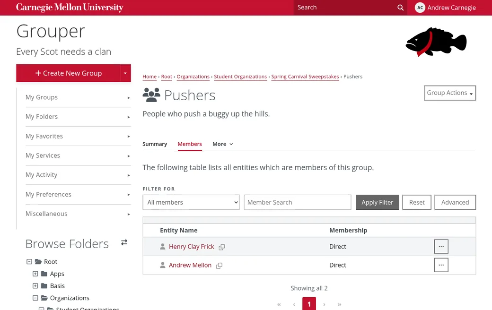

Grouper manages groups and their memberships across campus services. Kith & Kirr uses the Web Kilt to bring Carnegie Mellon's web template to Grouper's web interface.

Copy the prompt into an AI coding agent that can reach your Grouper server, and it installs the theme.
Install the Kith & Kirr theme on this Grouper. Download kith-and-kirr.zip from the latest release of https://github.com/cmu-web/cmu-web-kith-and-kirr and unzip it. With WEBAPP as Grouper's web app folder (/opt/grouper/grouperWebapp in Internet2's container): copy assets/kith-and-kirr/ to WEBAPP/grouperExternal/public/assets/kith-and-kirr/; copy customHeader.jsp to WEBAPP/WEB-INF/grouperUi2/assetsJsp/customHeader.jsp, and stop to ask if that file isn't empty; add the lines in properties/grouper-ui.properties to WEBAPP/WEB-INF/classes/grouper-ui.properties, the lines in properties/grouper.text.en.us.properties to WEBAPP/WEB-INF/classes/grouperText/grouper.text.en.us.properties, and the line in properties/Owasp.CsrfGuard.overlay.properties to WEBAPP/WEB-INF/classes/Owasp.CsrfGuard.overlay.properties, keeping every line those files already have and asking before replacing a setting the site already set. Never change any other file of Grouper's, and never a .base. file. If Grouper runs in a container, mount the files read-only or build them into the image instead of copying them into a running container. Ask what the site calls itself and set kithAndKirr.siteTitle to it. Restart Grouper.